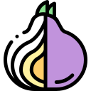

Talvez você já tenha ouvido falar do mercado Silk Road (ou a rota da seda, em tradução livre), certo? Este foi um site da dark web no qual funcionava uma espécie de mercado livre mundial do crime. Em 2013, as autoridades federais dos Estados Unidos derrubaram o site, suspenderam o domínio utilizado e prenderam Ross Willian Ulbricht, o fundador do Silk Road.
Mecanismos de busca não conseguem listar nenhum dos sites presentes na deep web, a "internet profunda". Isso significa que você não consegue encontrá-los usando Google, Yahoo e outros mecanismos de busca como esses.
A dark web também não é acessível por navegadores comuns, como o Chrome ou o Firefox, mas apenas pelo navegador Tor, que usa uma rede de conexões anônimas para garantir o sigilo de seus usuários ou até mesmo "escondê-los". A deep web ficou conhecida como um lugar onde produtos e serviços ilegais podem ser vendidos e comprados e, por isso, também ganhou uma certa reputação libertina e decadente. Será que isso é verdade?
Às vezes, as pessoas usam os termos "deep web" e "dark web" como sinônimos, mas os dois não são iguais. Ambas são inacessíveis pelos mecanismos de busca e compostas de sites e conteúdos que não são públicos por diversos motivos, como acesso pago ou questões de privacidade.
Você provavelmente acessa a deep web regularmente, mas não percebe. Por exemplo: se você logar no site do seu plano de saúde para enviar mensagens ao seu médico ou verificar os resultados de exames mais recentes, aí está a deep web.
O mesmo vale para a leitura de documentos internos na intranet corporativa do seu trabalho. Não é que seja obscuro ou perigoso, mas não é disponível para acesso sem as credenciais de login adequadas. O conteúdo da deep web representa a maior parte da internet: segundo algumas estimativas, segundo o CSO Daily, algo como 96% ou mais.
A diferença, então, é que o conteúdo da deep web não é acessível simplesmente porque está restrito por logins ou paywalls, enquanto o conteúdo da dark web é propositalmente escondido por seus proprietários e requer um software especial — um navegador chamado Tor — para ser acessado. Portanto, existem muitos motivos para fazer login na deep web, mas será que existem motivos legítimos para vasculhar a dark web? Com certeza.
O Tor começou como uma forma dos usuários se comunicarem mantendo o anonimato, enviando solicitações de pesquisa por meio de uma vasta rede de servidores proxy espalhados pelo mundo, para que qualquer coisa que você visualize não possa ser rastreada de volta até seu computador.
Esse navegador ainda funciona do mesmo jeito, embora indivíduos empreendedores tenham aproveitado o anonimato para comprar e vender todo tipo de coisa errada. Mesmo assim, há pessoas que têm motivos para permanecer anônimas sem que isso signifique se envolver com crimes. O Tor é útil em países onde o acesso à internet é monitorado ou restrito. Como aponta o CSO Daily, jornalistas e agentes da lei usam a dark web para se manterem à frente das notícias e investigações, enquanto advogados podem procurar lá informações sobre seus casos e cidadãos comuns preocupados com a privacidade online podem se sentir mais seguros na dark web.
Se você quiser explorar a dark web, entre no site do Projeto Tor e baixe o Tor. "Tor" vem do nome The Onion Router ("a cebola roteadora", em tradução livre), sendo a "cebola" uma referência às diferentes camadas da internet. Ele está disponível para sistema operacional Windows, Mac e Linux, como também para celulares Apple e Android na versão mobile.
No geral, assim que você baixar e instalar o Tor, estará pronto para usar, mas tem alguns aspectos que você precisa saber. Para começar, usar o Tor é demorado, é como usar a internet discada dos primórdios da internet, simplesmente porque leva tempo para rotear as suas requisições de busca por meio de todos os processos de anonimização.
Em segundo lugar, acessar sites específicos é um pouquinho diferente. Páginas na dark web terminam em ".onion" em vez dos típicos ".com", ".edu", ".org", etc. Lá, os sites também não tem endereços diretos, fáceis de lembrar. Mesmo que você esteja tentando acessar a versão dark web do Facebook (e sim, ela existe!), escrever "facebook.onion" não vai te levar até lá: tem letras e números aleatórios também misturados no meio do endereço.
Por fim, uma vez que a ideia do Tor é que ninguém saiba quem você é nem onde você está, os resultados da busca podem aparecer até em outra língua, pois ele pode entender que você está em outro lugar no mundo baseado na maneira com que os proxies redirecionam o seu tráfego.
Na maior parte do mundo, é completamente legal usar o Tor, embora existam algumas exceções, como na Venezuela e na China. Porém, isso não significa que você esteja legalmente autorizado a se envolver com um conteúdo ilegal na dark web, mas sim que o fato de ter instalado ou usar o Tor não é, em si, motivo para você ficar encrencado.
Desconfie ao comprar serviços ou produtos, mesmo aqueles que não são ilegais, porque o anonimato da dark web faz dela um porto seguro para golpistas. Desconfie de sites que podem infectar seu computador com malware ou outros softwares maliciosos que podem permitir o acesso de hackers às suas senhas ou, quem sabe, à sua webcam. Além disso, como há abundância de conteúdo ilegal e perturbador, acessar conteúdo ilegal continua sendo crime, mesmo que seja mais difícil para as autoridades rastreá-lo.
Além das três camadas de criptografia do Tor, o navegador também exclui seu histórico de navegação, apaga seus rastros e impede que os sites identifiquem e rastreiem você, segundo a Wired. As medidas de segurança do Tor não são infalíveis, mas são muito boas. Lembre-se de que se você usar seu nome real, endereço, e-mail ou outra informação de identificação em qualquer lugar da dark web, você está abrindo mão das proteções fornecidas pelo Tor.
